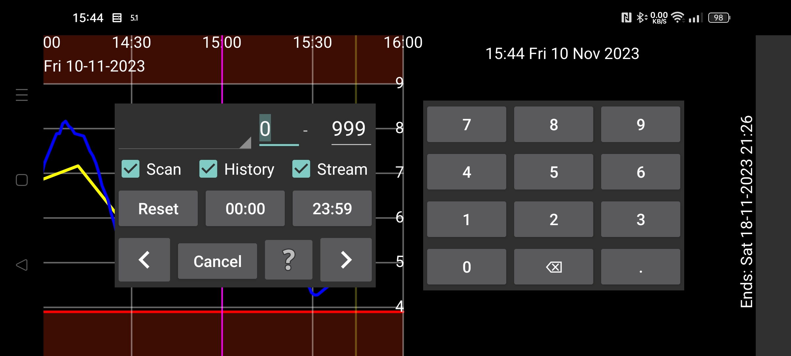

ar be de es fa fr hi it ja ko nl pl pt ru tr uk uz zh en
«جستوجو» برای پیداکردن مقدارهای گلوکز و مقدارهای ثبتشده به کار میرود.
در بازهٔ عددی تعیینشده جستوجو میشود؛ مثلاً از ۱۰ تا ۹۹۹ برای پیداکردن مقدارهای بین این دو عدد.
مقدارهای گلوکز در سه گروه «اسکنها»، «تاریخچه» و «دادههای پیوسته» دستهبندی میشوند.
«اسکنها»: جستوجو در مقدارهای خامِ دریافتشده هنگام اسکن.
«تاریخچه»: جستوجو در مقدارهای خام تاریخچه؛ یعنی اندازهگیریهای دورهای که در حسگر ذخیره و بعداً به برنامه منتقل میشوند. حسگر Libre 2 هر ۱۵ دقیقه یک مقدار ذخیره میکند و هنگام اسکن NFC آنها را منتقل میکند. حسگر Libre 3 هر ۵ دقیقه یک مقدار ذخیره میکند و از طریق بلوتوث میفرستد.
«تاریخچهٔ واسنجیشده»: جستوجو در مقدارهای تاریخچه پس از واسنجی.
«دادههای پیوسته»: جستوجو در مقدارهای خام پیوسته، یعنی خوانشهای یکدقیقهای ارسالی از طریق بلوتوث.
«دادههای پیوستهٔ واسنجیشده»: جستوجو در مقدارهای پیوسته پس از واسنجی.
اگر دادههای انسولین، غذا یا فعالیت ثبت کردهاید، برچسب مربوط را از فهرست کشویی انتخاب کنید و بازهٔ عددی را تعیین کنید؛ مثلاً دوچرخهسواری از ۵۰ تا ۱۰۰.
میتوانید ساعتهای روز را نیز محدود کنید. برای جستوجوی افت گلوکز بین ۲۲:۰۰ و ۰۷:۰۰، زمان نخست (که ابتدا ۰۰:۰۰ است) را روی ۲۲:۰۰ و زمان دوم را روی ۰۷:۰۰ تنظیم کنید. همچنین «دادههای پیوسته» یا «تاریخچه» یا هر دو را انتخاب و بازهٔ گلوکز را مثلاً از ۰ تا ۳٫۹ mmol/L (۷۰ mg/dL) مشخص کنید.
با لمس هر پیکان، جستوجو در جهت همان پیکان آغاز میشود.
«بازنشانی» تمام معیارهای جستوجو را به مقدارهای آغازین برمیگرداند.
در «تنظیمات ← برچسبهای مقدارها» میتوان برچسبی برای وعدههای غذایی انتخاب کرد. در «مقدار جدید» هنگام انتخاب آن برچسب، دکمهٔ «وعدهٔ غذایی» دیده میشود. با این دکمه میتوان غذا را از مواد تشکیلدهنده ساخت. اگر در همین صفحهٔ جستوجو آن برچسب را انتخاب کنید، کادری در بالای صفحه میآید تا بر اساس مادهٔ غذایی و حداقل مقدار آن جستوجو کنید.